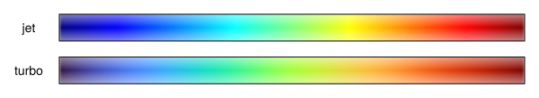
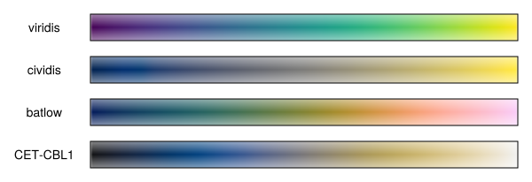
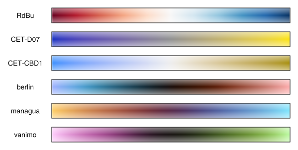
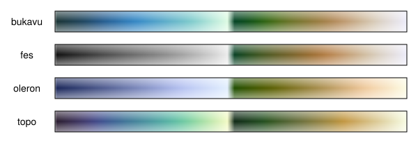
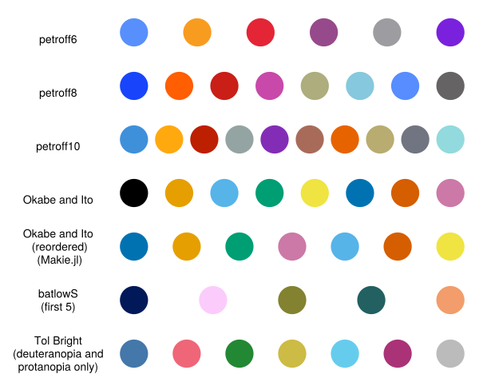

Scientific colormaps and why you should care
A case study
What’s the difference between these two colormaps?
Which do we choose to plot our results in?

Despite the fact that visualizations of scientific results or data are enshrined in journals that lives on after we are gone, most of us put little thoughts on the colormaps that we plot our results in.
I mean, who has the time to care about this? Much less two that hardly look any different! Most will just stick to the default that their plotting programs/libraries chose. In fact, the first colormap of the two was the default used by Matlab and Matplotlib up till around 2015.
But what if I told you that these two colormaps look quite different to people with color vision deficiency (CVD), and that the first colormap can and has been shown to misrepresent scientific results?
The first colormap is the infamous jet (sometimes referred to as “rainbow”), and people have been pleading for the end of its use for a long time1. In the extreme, it might even lead to harmful consequences such as medical diagnostic errors (Borkin et al. 2011)!
2 Non-uniformity is akin to having a non-uniform scale such as the log-scale, e.g., the jet colormap has a long region of blue which rapidly jumps to cyan then green. The two bright bands of cyan and yellow are also examples of non-linearity.
As I found out recently, the use of colormaps in scientific visualization is actually quite well-studied (Landini and Perryer 2011; Kovesi 2015; Zhou and Hansen 2016), and it is widely accepted that colormaps should be perceptually uniform, linear, and CVD-friendly (or continue to be perceptually uniform and linear for people with CVD)2.
The jet colormap fails all three conditions, and thus can easily mislead or misrepresent scientific results. Small differences in values are emphasized if it happens to lie on the cyan-green-yellow region, but greater differences that lies along the blue or red regions are hidden instead. It can also create misleading boundaries in results where there are none due to the sharp cyan and yellow regions.
These shortcomings are why Matlab and Matplotlib eventually developed new colormaps as replacements around 2015; Matlab developed parula, and Matplotlib made the now popular viridis and a few others3.
But yet, jet remains somewhat prevalent as some researchers find it hard to give up on it (I spotted some in the wild as recent as this year). This led Google to develop the second colormap above, turbo, which retains the rainbow color but is supposed to be an improvement over jet. Though it is still not ideal and there are some criticisms of it. One user on HackerNews even joked that:
“One good use for this new color map might be: ‘My ignorant boss keeps insisting on using the jet color map even though it is terrible. I can drop this one in and he won’t notice the difference but it will be somewhat better, even if still problematical in many ways.’”
You see, I believe that it is our responsibility to not only ensure that scientific results are not misrepresented, but also to ensure that it is accessible to people with CVD.
A typical plotting library will provide a myriad of different colormaps, and one should have some restrain to not choose a colormap too freely.
So which colormap?
Neither jet nor turbo. Just do not use “rainbow” colormaps (in 99.9% of all cases) regardless of whether you need a sequential or diverging colormap.
But a lot of these programs favors quantity over quality. How do I know if that pretty colormap my favorite plotting library provided is perceptually uniform, linear, and CVD-friendly?
Generally, one just have to know the families of colormaps that were designed with these standards in mind, and plotting libraries with good documentations tend to properly group them into these families, e.g., take a look at Julia’s where anything grouped under “scientific” or “colorcet” are generally fine.
Nevertheless, here are some general recommendations:
Matplotlib’s default, viridis, and a CVD-friendlier version by Nuñez, Anderton, and Renslow (2018), cividis, which I prefer, will suffice for most sequential plots. Though, batlow by Fabio Crameri is another favorite and is scientifically derived (Crameri, Shephard, and Heron 2020). ColorCET by Kovesi (2015) also has the CVD-friendly colormap CET-CBL1. All these are good and are widely available in various programs and plotting libraries.


Reprinted from Crameri, Shephard, and Heron (2020).
Comparison between jet and batlow.
Also check out his talk at the University of Oslo GEOHYD Lunch Seminar 2021.
For diverging colormaps, there’s ColorBrewer’s RdBu, ColorCET’s CET-D07, or the CVD-friendlier CET-CBD1, though you can’t really go wrong with the rest of the colormaps by Fabio Crameri either (Matplotlib provides Crameri’s berlin, managua, and vanimo).

Crameri also has some bi-sequential colormaps that are useful for topographical plots. The only other I know of is cmocean’s topo.

Overall, when in doubt, stick to viridis, cividis, and the colormaps by Crameri.
What about color cycles/sequences?
Color cycles/sequences too are important in scientific visualization given how much more common qualitative/categorical plots are. The only concern is to be perceptually distinguishable, even for people with CVD. However, there are very little consensus on them, and it seems that different programs or libraries often pick their own based on subjective reasoning or aesthetics.
For example, the familiar Matplotlib’s palette (also used by Vega, d3, plotly and various others) often seen in published plots were simply adopted from Tableau4, and is not CVD-friendly despite its widespread usage! A number of the colors in the palette are not perceptually distinct to people with CVD (see “Category 10” in the margin figure below).
4 Tableau has since changed to a newer palette based yet again on subjective senses of aesthetic.
Still, there have been some attempts to look for CVD-friendly color cycles. For example, the palettes by Paul Tol and the ones by Okabe and Ito are quite well-known, especially after the latter was brought to light again by Wong (2011) (and thus often misattributed to him, e.g., in Julia’s Makie.jl). Crameri too proposed a palette using batlow, though it is only perceptually distinct for roughly the first five colors.
As far as I’m aware, the most thorough study that attempts to balance CVD-friendliness and aesthetics were conducted by Petroff (2024), which features a distance metric to measure perceptual distinguishability (including with CVD), and an online survey with 22000 responses that ranks aesthetical preferences. This resulted in 3 palettes of 6, 8, and 10 colors which I am quite fond of. They are also the default used in Typst’s Lilaq plotting library.
{kind=link}

Looking at Petroff’s analysis (see figure in the margin), there isn’t a lot of color cycles that are CVD-friendly, so it’s better to stick to Petroff’s color palettes. However, since they are typically not readily available, Okabe’s and Ito’s, and Crameri’s batlowS (up till the first 5 colors) are good alternatives.
Paul Tol’s “Tol Bright” is also CVD-friendly, but only for people with deuteranopia and protanopia. People with the much less common tritanopia would struggle with it5, which is why it has a low score in Petroff’s analysis.
5 According to Wikipedia only 0.015\% of individuals has tritanopia, which is an order of magnitude less than deuteranopia and protanopia. This is around 1000 people in the entire country of Singapore.
Summary
While it’s true that most reputable journals will require plots to be understandable in grayscale, i.e., relying on line style/shape in line and scatter plots, or roughly ensuring the lightness ordering of colormaps, most readers are reading the colored version on a computer, and color remains an important factor and tool in scientific visualization.
It can emphasize, direct, focus, mislead or misrepresent scientific results. Instead of just choosing a colormap or palette based on whether it looks aesthetically pleasing to our eyes, more care and responsibility should be taken in choosing one that is perceptually uniform and linear to not mislead, and one that is CVD-friendly to be accessible to more readers.